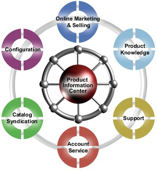

marketGRAVITY is a Product Application Server that provides
a powerful platform for developing and deploying a wide range
of product-centric applications. Built upon a sophisticated
Product Information Center, marketGRAVITY provides the framework
to convert product information into a key competitive asset
- making a company's products their center of gravity.
Despite the substantial investments made in ERP systems to manage
business processes, CRM systems to manage customers and SCM
systems to manage vendors, few investments have been made in
systems to manage products. An investment in marketGRAVITY enables
companies to create a Product Application Server, building out
a number of applications that leverage product information.
By creating a Product Information Center and leveraging the
functionality of marketGRAVITY, companies can assist internal
resources, channels and partners in a number of ways, including:
Product Knowledge: A hub to provide information that
supports field or channel selling efforts - delivering compelling
product advantages, relevant pricing information and competitive
comparisons |

Support: Generating and maintaining product support
information for customers, and using that touchpoint to sell
more effectively to the installed base of customers
Catalog Syndication: Allowing channels or prospects
to build user-defined custom catalogs of a company's products
to use for targeted marketing campaigns or purchasing
Warranty: Managing product information relevant to
a customer's warranty, such as parts compatible with their
on site configuration or recommended cross-sells and upgrades
given their warranty status
Configuration: Providing light configuration capabilities
or enhancing the selling power of existing configuration tools
|